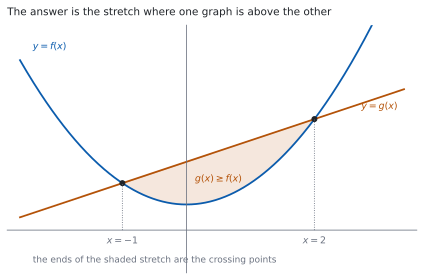
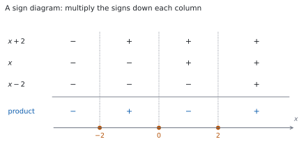

HL 2.15 — Solving \(g(x) \geq f(x)\)（不等式をグラフでも式でも解く）
- 不等式を、すべて片側に寄せた形に直せる。
- グラフから、どちらが上かを読んで答えを書ける。
- \(2\) 次・\(3\) 次の不等式を、因数分解と符号の表で解ける。
- 重解があるときの符号の変わり方を言える。
- 分数を含む不等式で、両辺に掛けてはいけない理由を言える。
- 答えを、\(-1 \leq x \leq 2\) のような範囲の形で書ける。
The idea
1. Working with the difference（不等式は「差」で考える）
シラバスは、次のように書いています。
Solutions of \(g(x) \geq f(x)\), both graphically and analytically.
\(2\) つの関数をくらべる問題です。\(g(x) \geq f(x)\) は、移項すれば
\[ g(x) - f(x) \geq 0 \tag{1}\]
と同じです。差が \(0\) 以上になる \(x\) の範囲を答えます。
寄せる向きは、どちらでもかまいません。 ただし負の数で割ったり掛けたりすると、不等号の向きが変わるので、最高次の係数が正になるように寄せると安全です。
Guidance は、扱う範囲を決めています。
Graphical or algebraic methods for simple polynomials up to degree 3. Use of technology for these and other functions.
手で解くのは \(3\) 次までです。それ以外は電卓を使います。
覚える式はありません。手順を覚えます。
答えの書き方だけは、決まった形にしてください。\(-1 \leq x \leq 2\)、\(x \leq -3\) または \(x \geq 3\) のように書きます。
2. Solving graphically（グラフで解く）

\(f(x) = x^{2}\)、\(g(x) = x+2\) として、\(g(x) \geq f(x)\) を解きます。
図 1 のとおり、直線が放物線より上にあるのは、\(2\) つの交点のあいだです。交点は
\[ x + 2 = x^{2} \ \Rightarrow \ x^{2}-x-2 = 0 \ \Rightarrow \ (x-2)(x+1) = 0 \]
から \(x = -1\) と \(x = 2\) です。ですから答えは
\[ -1 \leq x \leq 2 \]
です。交点そのものは、\(\geq\) なので入ります。
\[ \text{交点を求める} \to \text{どちらが上かを見る} \to \text{範囲を書く} \tag{2}\]
graphically と書かれていても、交点の座標は方程式を解いて出すのがふつうです。
グラフは、どちらが上かを決めるために使います。目で読んだ交点の値をそのまま答えにはしません。
3. Solving analytically: three steps（式で解く：\(3\) つの手順）
グラフをかかずに解くときは、次の \(3\) 手です。
- すべて片側に寄せて、\((\text{式}) \geq 0\) の形にする。
- 因数分解して、\(0\) になる \(x\)（critical values）を出す。
- 各区間で符号を調べて、条件に合う区間を書く。
\(2\) 次なら、放物線の向きを考えるだけで \(3\) 番目が済みます。\(3\) 次以上では、符号の表（第 5 節）を使います。
\(x^{2} \geq 4x\) の両辺を \(x\) で割って \(x \geq 4\) とするのは、まちがいです。
\(x\) が負なら不等号の向きが変わり、\(x = 0\) なら割れないからです。
\[ x^{2}-4x \geq 0 \ \Rightarrow \ x(x-4) \geq 0 \]
と寄せてから因数分解します。答えは \(x \leq 0\) または \(x \geq 4\) です。
4. Quadratic inequalities（\(2\) 次の不等式）
\(x^{2}-x-2 \leq 0\) を解きます。因数分解して
\[ (x-2)(x+1) \leq 0 \]
です。critical values は \(-1\) と \(2\) です。
\(x^{2}\) の係数が正なので、放物線は下に凸です。\(x\) 軸より下（または上）にあるのは、\(2\) つの交点のあいだです。
\[ -1 \leq x \leq 2 \]
\(2\) 次では、この形を覚えておくと速いです。
| 不等式 | 答えの形 |
|---|---|
| \(a(x-p)(x-q) \leq 0\)（\(p < q\)） | \(p \leq x \leq q\)（あいだ） |
| \(a(x-p)(x-q) \geq 0\) | \(x \leq p\) または \(x \geq q\)（外側） |
「あいだ」か「外側」かの \(2\) 通りだけです。
5. Cubic inequalities and sign diagrams（\(3\) 次の不等式と符号の表）

\(x^{3} \geq 4x\) を解きます。まず寄せます。
\[ x^{3} - 4x \geq 0 \ \Rightarrow \ x\left(x^{2}-4\right) \geq 0 \ \Rightarrow \ x(x-2)(x+2) \geq 0 \]
critical values は \(-2\)、\(0\)、\(2\) です。この \(3\) つで、数直線が \(4\) つの区間に分かれます。
図 2 が符号の表です。各因数の符号を区間ごとに書き、縦にかけ算すると積の符号が出ます。
| 区間 | \(x+2\) | \(x\) | \(x-2\) | 積 |
|---|---|---|---|---|
| \(x < -2\) | \(-\) | \(-\) | \(-\) | \(-\) |
| \(-2 < x < 0\) | \(+\) | \(-\) | \(-\) | \(+\) |
| \(0 < x < 2\) | \(+\) | \(+\) | \(-\) | \(-\) |
| \(x > 2\) | \(+\) | \(+\) | \(+\) | \(+\) |
積が \(0\) 以上なのは \(2\) 番目と \(4\) 番目です。critical values も入れて
\[ -2 \leq x \leq 0 \quad \text{または} \quad x \geq 2 \]
符号は、critical value をまたぐたびに変わります（因数が \(1\) 回ずつしか出てこないとき）。ですから、いちばん右の区間だけ調べて、左へ交互に書くこともできます。
6. When there is a repeated root（重解があるとき）
同じ因数が \(2\) 回現れると、符号が変わりません（HL 2.12）。
\((x+1)(x-2)^{2} \geq 0\) を見ます。\((x-2)^{2}\) は \(2\) 乗なので、いつでも \(0\) 以上です。ですから積の符号は \((x+1)\) だけで決まります。
- \(x < -1\)：\((x+1) < 0\) なので、積は負
- \(x > -1\)：\((x+1) > 0\) なので、積は正（ただし \(x = 2\) では \(0\)）
\[ x \geq -1 \]
が答えです。\(x = 2\) は、値が \(0\) なので \(\geq\) には入ります。
「またぐたびに符号が変わる」は、因数が \(1\) 回のときの話です。 \(2\) 乗の因数があったら、そこで符号は変わりません。
7. Inequalities with a fraction: do not multiply through（分数を含むとき：両辺に掛けない）
\(\dfrac{1}{x} > 2\) の両辺に \(x\) を掛けて \(1 > 2x\) とするのは、まちがいです。\(x\) が負なら、向きが変わるからです。
差を作って、\(1\) つの分数にまとめます。
\[ \frac{1}{x} - 2 > 0 \ \Rightarrow \ \frac{1-2x}{x} > 0 \]
分数が正になるのは、分子と分母が同じ符号のときです。critical values は \(\dfrac{1}{2}\)（分子）と \(0\)（分母）です。
- \(x < 0\)：分子 \(1-2x > 0\)、分母 \(< 0\) → 負
- \(0 < x < \dfrac{1}{2}\)：どちらも正 → 正
- \(x > \dfrac{1}{2}\)：分子 \(< 0\)、分母 \(> 0\) → 負
\[ 0 < x < \frac{1}{2} \]
分母が \(0\) になる \(x\) は、答えに入れません。 等号付きの不等号でも、\(x = 0\) は外します。
Guidance にも Use of technology for these and other functions. とあります。
TI-Nspire CX II の Graphs ページに \(y = f(x)\) と \(y = g(x)\) の \(2\) つを入れ、menu → Analyze Graph → Intersection で交点を出します。左右の境界をきかれるので、交点をはさむ \(2\) 点を指定します。
交点が出たら、どちらのグラフが上かを画面で見て、範囲を書きます。
\(3\) 次より上の式や、\(\sin\) などが混ざった式では、これが主な道になります。 手で因数分解できないからです。
Paper 1 では使えません。 このページの例題と演習は、すべて手で解けるようにしてあります。
Why it works
なぜ、差にすると解けるのか
\(g(x) \geq f(x)\) は、「\(g\) の値のほうが大きいか等しい」という意味です。両辺から \(f(x)\) を引くと
\[ g(x) - f(x) \geq 0 \]
で、\(1\) つの関数の符号の話になりました。\(2\) つをくらべる問題が、\(1\) つの式が正か負かの問題に変わっています。
引き算は、不等号の向きを変えません。 変わるのは、負の数を掛けたり割ったりしたときだけです。
なぜ、符号は critical value でしか変わらないのか
\(h(x)\) を多項式とします。多項式のグラフはつながっています（切れ目がありません）。
\(x = p\) で \(h(p) > 0\)、\(x = q\) で \(h(q) < 0\) だとすると、グラフは \(p\) と \(q\) のあいだで必ず \(x\) 軸を通ります。 上から下へ行くのに、\(0\) を飛び越えることはできないからです。
ですから、符号が変わる場所は \(h(x) = 0\) の解だけです。解と解のあいだでは、符号はずっと同じです。
だから、区間ごとに \(1\) 点だけ調べれば足ります。 その \(1\) 点の符号が、区間全体の符号です。
なぜ、\(2\) 乗の因数では変わらないのか
\((x-a)^{2}\) は、\(x \neq a\) ではいつも正です。\(x = a\) で \(0\) になりますが、\(0\) を通っても、前後で符号が同じです。
\((x-a)^{3}\) なら、\(x < a\) で負、\(x > a\) で正なので、変わります。
指数が偶数なら変わらず、奇数なら変わります（HL 2.12）。グラフが \(x\) 軸に接するか、またぐかと同じ話です。
なぜ、両辺に \(x\) を掛けてはいけないのか
不等式に負の数を掛けると、向きが変わります。\(3 > 1\) の両辺に \(-1\) を掛けると \(-3 < -1\) です。
\(x\) を掛けるとき、\(x\) が正か負かが分からないので、向きをどうすればよいか決められません。\(x = 0\) なら、両辺が \(0\) になって情報が消えます。
正だと分かっているものなら掛けられます。 たとえば \(x^{2}+1\) はいつも正なので、両辺に掛けても向きは変わりません。
\(\dfrac{1}{x} > 2\) のような形では、差にして \(1\) つの分数にまとめるのが安全です（第 7 節）。場合分けをしてもかまいませんが、書く量が増えます。
Worked examples
問題文は英語です。意味が理解できなかったら、問題文の下の「日本語訳」を開いてください。解説は日本語です。
例題も演習も、すべて電卓なしで解けます。 Paper 1 のつもりで解いてください。
例題 1 Solve \(x^{2}-3x-4 \leq 0\).
日本語訳
\(x^{2}-3x-4 \leq 0\) を解きなさい。
すでに片側に寄っているので、因数分解からです（第 3 節）。
\[ x^{2}-3x-4 = (x-4)(x+1) \leq 0 \]
critical values は \(4\) と \(-1\) です。
\(x^{2}\) の係数が正なので、放物線は下に凸です。\(0\) 以下になるのは \(2\) つの交点のあいだです（第 4 節）。
\[ -1 \leq x \leq 4 \]
検算。 区間の中の \(1\) 点で試します。 \(x = 0\) とすると \(0-0-4 = -4 \leq 0\) ✓
検算（外側で）。 \(x = 5\) とすると \(25-15-4 = 6 > 0\) ✓ 入りません。\(x = -2\) でも \(4+6-4 = 6 > 0\) ✓ 両側とも外れています。
\[x^{2}-3x-4 = (x-4)(x+1) \leq 0\]
The critical values are \(x = -1\) and \(x = 4\), and the parabola opens upwards, so the expression is negative between them.
\[-1 \leq x \leq 4\]
例題 2 Solve \(2x+3 > x^{2}\).
日本語訳
\(2x+3 > x^{2}\) を解きなさい。
まず寄せます。 \(x^{2}\) の係数が正になる向きに寄せると、あとが考えやすくなります（第 1 節）。
\[ 0 > x^{2}-2x-3 \ \Rightarrow \ x^{2}-2x-3 < 0 \]
\[ (x-3)(x+1) < 0 \]
critical values は \(3\) と \(-1\) で、下に凸なので、あいだです。
\[ -1 < x < 3 \]
等号が入っていないので、端は含みません。
検算。 \(x = 0\) とすると、もとの式は \(3 > 0\) ✓ 成り立ちます。
検算（端で）。 \(x = 3\) では \(9 > 9\) となり、成り立ちません ✓ 端が入らないことと合っています。
\[2x+3 > x^{2} \ \Rightarrow \ x^{2}-2x-3 < 0 \ \Rightarrow \ (x-3)(x+1) < 0\]
The critical values are \(x = -1\) and \(x = 3\), and the parabola opens upwards, so
\[-1 < x < 3\]
例題 3 Solve \(x^{3}+2x^{2}-5x-6 \geq 0\).
日本語訳
\(x^{3}+2x^{2}-5x-6 \geq 0\) を解きなさい。
\(3\) 次なので、因数定理で因数を \(1\) つ見つけます（HL 2.12）。定数項 \(-6\) の約数から試します。
\[ P(-1) = -1+2+5-6 = 0 \]
なので \((x+1)\) が因数です。割って
\[ x^{3}+2x^{2}-5x-6 = (x+1)\left(x^{2}+x-6\right) = (x+1)(x+3)(x-2) \]
critical values は \(-3\)、\(-1\)、\(2\) です。符号の表を作ります（第 5 節）。
| 区間 | \(x+3\) | \(x+1\) | \(x-2\) | 積 |
|---|---|---|---|---|
| \(x < -3\) | \(-\) | \(-\) | \(-\) | \(-\) |
| \(-3 < x < -1\) | \(+\) | \(-\) | \(-\) | \(+\) |
| \(-1 < x < 2\) | \(+\) | \(+\) | \(-\) | \(-\) |
| \(x > 2\) | \(+\) | \(+\) | \(+\) | \(+\) |
積が \(0\) 以上なのは \(2\) 番目と \(4\) 番目です。等号があるので critical values も入れます。
\[ -3 \leq x \leq -1 \quad \text{または} \quad x \geq 2 \]
検算。 各区間で \(1\) 点ずつ試します。 \(x = -2\) では \(-8+8+10-6 = 4 \geq 0\) ✓ \(x = 0\) では \(-6 < 0\) ✓ 入りません。
検算（右端で）。 \(x = 3\) では \(27+18-15-6 = 24 \geq 0\) ✓ \(4\) つの区間のうち \(2\) つだけが答えです。
\(P(-1) = -1+2+5-6 = 0\), so \((x+1)\) is a factor.
\[x^{3}+2x^{2}-5x-6 = (x+1)\left(x^{2}+x-6\right) = (x+1)(x+3)(x-2)\]
The critical values are \(x = -3\), \(x = -1\) and \(x = 2\). A sign diagram gives the product as negative, positive, negative, positive on the four intervals, so
\[-3 \leq x \leq -1 \quad \text{or} \quad x \geq 2\]
例題 4 Let \(f(x) = x^{3}\) and \(g(x) = 4x\).
(a) Find the \(x\)-coordinates of the points where the graphs of \(f\) and \(g\) meet.
(b) Hence solve \(g(x) \geq f(x)\).
日本語訳
\(f(x) = x^{3}\)、\(g(x) = 4x\) とします。
(a) \(f\) と \(g\) のグラフが交わる点の \(x\) 座標を求めなさい。
(b) それを使って \(g(x) \geq f(x)\) を解きなさい。
(a) 交点では \(f(x) = g(x)\) です。
\[ x^{3} = 4x \ \Rightarrow \ x^{3}-4x = 0 \ \Rightarrow \ x(x-2)(x+2) = 0 \]
\[ x = -2, \qquad x = 0, \qquad x = 2 \]
両辺を \(x\) で割らないでください。 \(x = 0\) の解が消えます（第 3 節）。
(b) \(g(x) \geq f(x)\) を寄せます。
\[ 4x \geq x^{3} \ \Rightarrow \ 0 \geq x^{3}-4x \ \Rightarrow \ x(x-2)(x+2) \leq 0 \]
第 5 節 の符号の表がそのまま使えます。積が \(0\) 以下なのは、いちばん左と \(3\) 番目の区間です。
\[ x \leq -2 \quad \text{または} \quad 0 \leq x \leq 2 \]
試験ではこう書く
The graphs meet where \(x^{3} = 4x\), that is where \(x^{3}-4x = x(x-2)(x+2) = 0\), so at \(x = -2\), \(x = 0\) and \(x = 2\). These three values cut the real line into four intervals, and on each interval the sign of \(x(x-2)(x+2)\) is constant, because a polynomial can only change sign where it is zero. Testing one point in each interval: at \(x = -3\) the product is \((-3)(-5)(-1) = -15 < 0\); at \(x = -1\) it is \((-1)(-3)(1) = 3 > 0\); at \(x = 1\) it is \((1)(-1)(3) = -3 < 0\); at \(x = 3\) it is \((3)(1)(5) = 15 > 0\). The inequality \(g(x) \geq f(x)\) is equivalent to \(x(x-2)(x+2) \leq 0\), which therefore holds on the first and third intervals, together with the three points where the product is zero. Hence the solution is \(x \leq -2\) or \(0 \leq x \leq 2\).
（交点の \(3\) つの値で数直線が \(4\) つに分かれ、各区間で符号は変わらない。\(1\) 点ずつ試して、負になる区間と交点を集めた、という意味です。）
検算。 \(x = -3\) で試します。 \(g(-3) = -12\)、\(f(-3) = -27\) です。\(-12 \geq -27\) ✓ 入ります。
検算（\(x = 1\) で）。 \(g(1) = 4\)、\(f(1) = 1\) で、\(4 \geq 1\) ✓ こちらも入ります。\(x = 3\) なら \(g = 12\)、\(f = 27\) で \(12 \geq 27\) は成り立ちません ✓
(a) \(x^{3} = 4x \ \Rightarrow \ x(x-2)(x+2) = 0\), so \(x = -2\), \(x = 0\), \(x = 2\).
(b) \(4x \geq x^{3} \ \Rightarrow \ x(x-2)(x+2) \leq 0\)
A sign diagram with critical values \(-2\), \(0\), \(2\) gives
\[x \leq -2 \quad \text{or} \quad 0 \leq x \leq 2\]
Common errors
\(x^{2} \geq 4x\) を \(x\) で割ると、解が消えたり、向きがまちがったりします（第 3 節）。
\(x\) の符号が分からないからです。寄せてから因数分解してください。
\(-x^{2}+3x > 0\) の両辺に \(-1\) を掛けたら、\(x^{2}-3x < 0\) です。\(>\) のままにしないでください。
はじめから最高次の係数が正になる向きに寄せておくと、この操作が要りません。
\(\leq\) なら端が入り、\(<\) なら入りません。問題文の不等号をそのまま写してください。
\(0\) になる点は、\(\leq\) や \(\geq\) のときだけ答えに入ります。
critical value をまたぐたびに符号が変わるのは、因数が \(1\) 回ずつのときです（第 6 節）。
\((x-2)^{2}\) のような因数があると、そこでは変わりません。符号の表を作れば、決めつけずに済みます。
\(\dfrac{1}{x} > 2\) の両辺に \(x\) を掛けてはいけません（第 7 節）。
差にして \(1\) つの分数にまとめ、分子と分母の符号を見てください。分母が \(0\) になる \(x\) は、答えから外します。
\(x = -1,\ 2\) は、方程式の答えです。不等式の答えは範囲です。
\(-1 \leq x \leq 2\) のように書いてください。区間が \(2\) つなら「または」でつなぎます。
Exercises
各問題に、折りたたみが \(3\) つ付いています。日本語訳、解答例（答案用紙に書くべきこと。英語です）、解説（なぜそうなるか。日本語です）。
まず自分で解いて、次に解答例と見くらべてください。解説は、合わなかったときだけ開けば十分です。
1 Solve \(x^{2}-5x+6 < 0\).
日本語訳
\(x^{2}-5x+6 < 0\) を解きなさい。
\[x^{2}-5x+6 = (x-2)(x-3) < 0\]
The critical values are \(x = 2\) and \(x = 3\), and the parabola opens upwards, so
\[2 < x < 3\]
足して \(-5\)・掛けて \(6\) の \(2\) 数は \(-2\) と \(-3\) です。下に凸なので、\(0\) より小さいのはあいだです（第 4 節）。
検算。 \(x = 2.5\) とすると \(6.25-12.5+6 = -0.25 < 0\) ✓
検算（外側で）。 \(x = 4\) とすると \(16-20+6 = 2 > 0\) ✓ 入りません。
2 Solve \(x^{2} \geq 9\).
日本語訳
\(x^{2} \geq 9\) を解きなさい。
\[x^{2}-9 \geq 0 \ \Rightarrow \ (x-3)(x+3) \geq 0\]
The critical values are \(x = -3\) and \(x = 3\), and the parabola opens upwards, so
\[x \leq -3 \quad \text{or} \quad x \geq 3\]
\(x \geq 3\) だけでは足りません。 \(x = -4\) でも \(16 \geq 9\) です。
\(2\) 乗のままで「ルートを取る」と、負の側を落とします（演習 10）。寄せて因数分解してください。
検算。 \(x = -4\) では \(16 \geq 9\) ✓
検算（あいだで）。 \(x = 0\) では \(0 \geq 9\) は成り立ちません ✓ あいだは入りません。
3 Solve \(x^{2}+2x-8 \geq 0\).
日本語訳
\(x^{2}+2x-8 \geq 0\) を解きなさい。
\[x^{2}+2x-8 = (x+4)(x-2) \geq 0\]
The critical values are \(x = -4\) and \(x = 2\), and the parabola opens upwards, so
\[x \leq -4 \quad \text{or} \quad x \geq 2\]
\(\geq 0\) なので、答えは外側です（第 4 節）。
検算。 \(x = -5\) では \(25-10-8 = 7 \geq 0\) ✓
検算（あいだで）。 \(x = 0\) では \(-8 < 0\) ✓ 入りません。
4 Solve \(3x+4 \geq x^{2}\).
日本語訳
\(3x+4 \geq x^{2}\) を解きなさい。
\[0 \geq x^{2}-3x-4 \ \Rightarrow \ (x-4)(x+1) \leq 0\]
The critical values are \(x = -1\) and \(x = 4\), so
\[-1 \leq x \leq 4\]
\(x^{2}\) の係数が正になる向きに寄せます（第 1 節）。\(0 \geq (\ )\) は \((\ ) \leq 0\) と同じです。
検算。 \(x = 0\) では、もとの式は \(4 \geq 0\) ✓
検算（端で）。 \(x = 4\) では \(3(4)+4 = 16\)、\(4^{2} = 16\) で \(16 \geq 16\) ✓ 等号なので、端も答えに入ります。 \(x = 5\) では \(19 \geq 25\) が成り立たず、外れます ✓
5 Solve \(x^{3}-4x^{2}+3x < 0\).
日本語訳
\(x^{3}-4x^{2}+3x < 0\) を解きなさい。
\[x^{3}-4x^{2}+3x = x\left(x^{2}-4x+3\right) = x(x-1)(x-3)\]
The critical values are \(0\), \(1\) and \(3\). A sign diagram gives the product as negative, positive, negative, positive on the four intervals, so
\[x < 0 \quad \text{or} \quad 1 < x < 3\]
共通因数 \(x\) を先にくくると、因数分解が早く終わります。
\(<\) なので、critical values は入りません。
検算。 \(x = -1\) では \(-1-4-3 = -8 < 0\) ✓
検算（\(x = 2\) で）。 \(8-16+6 = -2 < 0\) ✓ こちらも入ります。\(x = 4\) では \(64-64+12 = 12 > 0\) ✓ 入りません。
6 Solve \((x-1)(x+2)^{2} \leq 0\).
日本語訳
\((x-1)(x+2)^{2} \leq 0\) を解きなさい。
\((x+2)^{2} \geq 0\) for all \(x\), and it is zero only at \(x = -2\).
For \(x \neq -2\) the sign of the product is the sign of \((x-1)\), which is negative for \(x < 1\) and positive for \(x > 1\). At \(x = -2\) and at \(x = 1\) the product is zero.
\[x \leq 1\]
\(2\) 乗の因数では符号が変わりません（第 6 節）。\(x = -2\) をまたいでも、積は負のままです。
\(x = -2\) そのものは値が \(0\) なので、\(\leq\) には入ります。答えの範囲の内側なので、書き分ける必要はありません。
検算。 \(x = -3\) では \((-4)(1) = -4 \leq 0\) ✓
検算（\(x = 0\) で）。 \((-1)(4) = -4 \leq 0\) ✓ \(x = 2\) では \((1)(16) = 16 > 0\) ✓ 入りません。
試験ではこう書く
The factor \((x+2)\) appears squared, and a square is never negative, so \((x+2)^{2} \geq 0\) for every real \(x\), with equality only at \(x = -2\). For every \(x\) other than \(-2\) the factor \((x+2)^{2}\) is strictly positive, so the sign of the product \((x-1)(x+2)^{2}\) is the same as the sign of \((x-1)\). That is negative for \(x < 1\), zero at \(x = 1\) and positive for \(x > 1\). The product is also zero at \(x = -2\), which already lies in \(x < 1\). Note that the sign does not change as \(x\) passes through \(-2\), because the factor there is squared. Hence the product is \(\leq 0\) exactly when \(x \leq 1\).
7 Let \(f(x) = x^{2}-4\) and \(g(x) = 3x\). Find the \(x\)-coordinates of the points where the graphs meet, and hence solve \(g(x) \geq f(x)\).
日本語訳
\(f(x) = x^{2}-4\)、\(g(x) = 3x\) とします。\(2\) つのグラフが交わる点の \(x\) 座標を求め、それを使って \(g(x) \geq f(x)\) を解きなさい。
\[3x = x^{2}-4 \ \Rightarrow \ x^{2}-3x-4 = 0 \ \Rightarrow \ (x-4)(x+1) = 0\]
The graphs meet at \(x = -1\) and \(x = 4\).
\[3x \geq x^{2}-4 \ \Rightarrow \ x^{2}-3x-4 \leq 0 \ \Rightarrow \ -1 \leq x \leq 4\]
交点を出すところと、不等式を解くところは同じ式です（第 2 節）。等号を不等号に変えるだけです。
直線が放物線より上にあるのは、\(2\) つの交点のあいだです。
検算。 \(x = 0\) では \(g(0) = 0\)、\(f(0) = -4\) で、\(0 \geq -4\) ✓
検算（外側で）。 \(x = 5\) では \(g(5) = 15\)、\(f(5) = 21\) で、\(15 \geq 21\) は成り立ちません ✓
8 Solve \(x^{3} \leq x\).
日本語訳
\(x^{3} \leq x\) を解きなさい。
\[x^{3}-x \leq 0 \ \Rightarrow \ x\left(x^{2}-1\right) = x(x-1)(x+1) \leq 0\]
The critical values are \(-1\), \(0\) and \(1\). A sign diagram gives the product as negative, positive, negative, positive on the four intervals, so
\[x \leq -1 \quad \text{or} \quad 0 \leq x \leq 1\]
両辺を \(x\) で割らないでください（第 3 節）。\(x^{2} \leq 1\) としてしまうと、負の側の答えがまるごと変わります。
検算。 \(x = -2\) では \(-8 \leq -2\) ✓
検算（\(x = 0.5\) で）。 \(0.125 \leq 0.5\) ✓ \(x = 2\) では \(8 \leq 2\) は成り立ちません ✓
9 Explain why multiplying both sides of \(\dfrac{1}{x} > 2\) by \(x\) can lead to a wrong answer, and solve the inequality correctly.
日本語訳
\(\dfrac{1}{x} > 2\) の両辺に \(x\) を掛けると、まちがった答えになりうる理由を説明し、この不等式を正しく解きなさい。
The sign of \(x\) is unknown, and multiplying an inequality by a negative number reverses it, so multiplying by \(x\) is not a valid step.
\[\frac{1}{x}-2 > 0 \ \Rightarrow \ \frac{1-2x}{x} > 0\]
The critical values are \(x = 0\) and \(x = \dfrac{1}{2}\). The quotient is positive only when numerator and denominator have the same sign, which happens for
\[0 < x < \frac{1}{2}\]
掛けて \(1 > 2x\)、つまり \(x < \dfrac{1}{2}\) とすると、\(x = -1\) も答えに入ってしまいます。 ところが \(\dfrac{1}{-1} = -1\) は \(2\) より大きくありません。
差にして \(1\) つの分数にまとめるのが安全です（第 7 節）。
検算。 \(x = \dfrac{1}{4}\) では \(\dfrac{1}{x} = 4 > 2\) ✓
検算（外側で）。 \(x = -1\) では \(-1 > 2\) は成り立ちません ✓ \(x = 1\) では \(1 > 2\) も成り立ちません ✓
試験ではこう書く
Multiplying both sides of an inequality by a quantity is only valid when the sign of that quantity is known: multiplying by a positive number keeps the inequality, while multiplying by a negative number reverses it. Here the quantity is \(x\) itself, whose sign is exactly what we are trying to determine, and \(x\) may also be zero, when the original expression is not even defined. So the step is not valid. Instead, bring everything to one side: \(\dfrac{1}{x}-2 > 0\), that is \(\dfrac{1-2x}{x} > 0\). A quotient is positive exactly when its numerator and denominator have the same sign. The critical values are \(x = \dfrac{1}{2}\), where the numerator is zero, and \(x = 0\), where the denominator is zero and the expression is undefined. For \(x < 0\) the numerator is positive and the denominator negative, so the quotient is negative; for \(0 < x < \dfrac{1}{2}\) both are positive; for \(x > \dfrac{1}{2}\) the numerator is negative and the denominator positive. Hence the solution is \(0 < x < \dfrac{1}{2}\).
10 A student writes: “\(x^{2} > 4\), so taking the square root gives \(x > 2\).” Explain the error, and give the correct solution.
日本語訳
ある生徒が、次のように書きました。「\(x^{2} > 4\) なので、平方根をとって \(x > 2\) である。」まちがいを説明し、正しい答えを書きなさい。
Squaring does not preserve order for negative numbers: \(x = -3\) satisfies \(x^{2} = 9 > 4\) but does not satisfy \(x > 2\), so the step loses solutions.
\[x^{2}-4 > 0 \ \Rightarrow \ (x-2)(x+2) > 0\]
\[x < -2 \quad \text{or} \quad x > 2\]
\(2\) 乗は、符号の情報を消します。 \((-3)^{2}\) も \(3^{2}\) も \(9\) です。ですから「ルートを取る」と、負の側が落ちます。
寄せて因数分解すれば、\(2\) つの区間が両方出ます（第 3 節）。
検算。 \(x = -3\) では \(9 > 4\) ✓ 答えに入っています。
検算（あいだで）。 \(x = 0\) では \(0 > 4\) は成り立ちません ✓ あいだは入りません。
試験ではこう書く
Taking square roots of both sides of an inequality is not a valid step unless both sides are known to be non-negative and the sign of \(x\) is known. Squaring reverses order on the negative numbers: for instance \(-3 < 2\) but \((-3)^{2} = 9 > 4 = 2^{2}\). Concretely, \(x = -3\) satisfies \(x^{2} = 9 > 4\) yet does not satisfy \(x > 2\), so the student’s answer leaves out solutions. The correct method is to bring everything to one side and factorise: \(x^{2}-4 > 0\) gives \((x-2)(x+2) > 0\), with critical values \(x = -2\) and \(x = 2\). The parabola opens upwards, so the expression is positive outside the roots. The solution is \(x < -2\) or \(x > 2\).